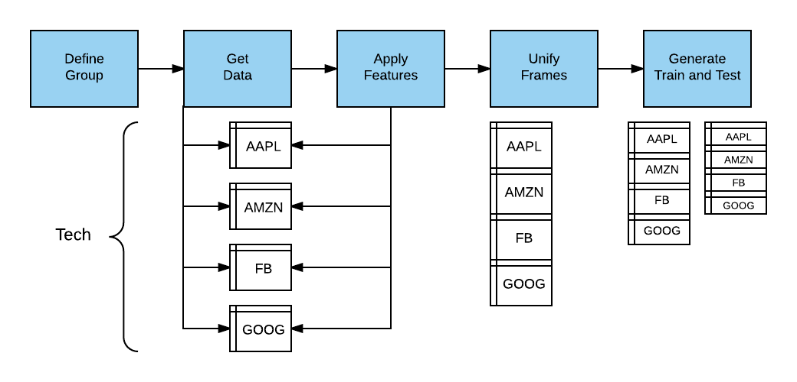
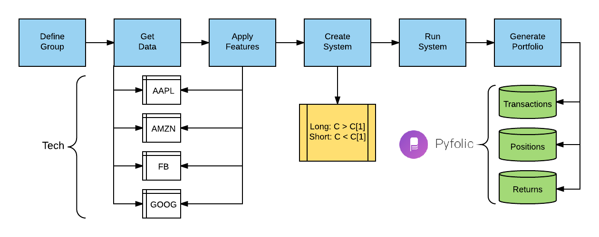

MarketFlow
MarketFlow transforms financial market data into machine learning models for making market predictions. The platform gets stock price data from Yahoo Finance (end-of-day) and Google Finance (intraday), transforming the data into canonical form for training and testing. MarketFlow is powerful because you can easily apply new features to groups of stocks simultaneously using our Variable Definition Language (VDL). All of the dataframes are aggregated and split into training and testing files for input into AlphaPy.
{kind=link}
Data Sources
MarketFlow gets daily stock prices from Yahoo Finance and intraday
stock prices from Google Finance. Both data sources have the standard
primitives: Open, High, Low, Close, and Volume.
For daily data, there is a Date timestamp and for intraday data,
there is a Datetime timestamp. We augment the intraday data with
a bar_number field to mark the end of the trading day. All trading
days do not end at 4:00 pm EST, as there are holiday trading days
that are shortened.
Date |
Open |
High |
Low |
Close |
Volume |
2017-03-01 |
853.05 |
854.83 |
849.01 |
853.08 |
2752000 |
2017-03-02 |
853.08 |
854.82 |
847.28 |
848.91 |
2129200 |
2017-03-03 |
847.20 |
851.99 |
846.27 |
849.88 |
1941100 |
2017-03-06 |
845.23 |
848.49 |
841.12 |
846.61 |
2598400 |
2017-03-07 |
845.48 |
848.46 |
843.75 |
846.02 |
2217800 |
2017-03-08 |
848.00 |
853.07 |
846.79 |
850.50 |
2286500 |
2017-03-09 |
851.00 |
856.40 |
850.31 |
853.00 |
2040600 |
2017-03-10 |
857.00 |
857.35 |
851.72 |
852.46 |
2422000 |
2017-03-13 |
851.77 |
855.69 |
851.71 |
854.59 |
1906100 |
2017-03-14 |
853.55 |
853.75 |
847.55 |
852.53 |
2128700 |
2017-03-15 |
854.33 |
854.45 |
847.11 |
852.97 |
2556700 |
2017-03-16 |
855.30 |
855.50 |
850.51 |
853.42 |
1832600 |
2017-03-17 |
853.49 |
853.83 |
850.64 |
852.31 |
3380700 |
2017-03-20 |
851.51 |
857.80 |
851.01 |
856.97 |
2223300 |
2017-03-21 |
858.84 |
862.80 |
841.31 |
843.20 |
4349100 |
2017-03-22 |
840.43 |
849.37 |
839.05 |
848.06 |
2636200 |
2017-03-23 |
848.20 |
850.89 |
844.80 |
847.38 |
1945700 |
2017-03-24 |
851.68 |
851.80 |
843.53 |
845.61 |
2118300 |
2017-03-27 |
838.07 |
850.30 |
833.50 |
846.82 |
2754200 |
2017-03-28 |
851.75 |
858.46 |
850.10 |
856.00 |
3033000 |
2017-03-29 |
859.05 |
876.44 |
859.02 |
874.32 |
4464400 |
2017-03-30 |
874.95 |
877.06 |
871.66 |
876.34 |
2745800 |
2017-03-31 |
877.00 |
890.35 |
876.65 |
886.54 |
3910700 |
Note
Normal market hours are 9:30 am to 4:00 pm EST. Here, we retrieved the data from the CST time zone, one hour ahead.
datetime |
open |
high |
low |
close |
volume |
bar_number |
end_of_day |
2017-03-31 08:30:00 |
877.00 |
877.06 |
876.66 |
877.06 |
43910 |
0 |
False |
2017-03-31 08:40:00 |
877.00 |
881.74 |
876.65 |
880.66 |
192152 |
1 |
False |
2017-03-31 08:50:00 |
881.00 |
886.01 |
880.45 |
884.67 |
249892 |
2 |
False |
2017-03-31 09:00:00 |
884.83 |
886.08 |
883.50 |
883.90 |
148034 |
3 |
False |
2017-03-31 09:10:00 |
883.90 |
886.44 |
883.84 |
885.72 |
118518 |
4 |
False |
2017-03-31 09:20:00 |
885.82 |
886.39 |
884.68 |
886.30 |
76880 |
5 |
False |
2017-03-31 09:30:00 |
886.14 |
886.74 |
885.07 |
885.73 |
74180 |
6 |
False |
2017-03-31 09:40:00 |
885.80 |
886.20 |
885.13 |
886.20 |
77154 |
7 |
False |
2017-03-31 09:50:00 |
886.21 |
887.61 |
885.77 |
887.51 |
86971 |
8 |
False |
2017-03-31 10:00:00 |
887.59 |
888.35 |
886.83 |
887.81 |
111998 |
9 |
False |
2017-03-31 10:10:00 |
887.80 |
888.72 |
887.59 |
888.60 |
64497 |
10 |
False |
2017-03-31 10:20:00 |
888.62 |
890.35 |
888.44 |
889.82 |
101562 |
11 |
False |
2017-03-31 10:30:00 |
889.81 |
889.96 |
888.83 |
889.83 |
42580 |
12 |
False |
2017-03-31 10:40:00 |
889.70 |
889.92 |
887.32 |
887.61 |
88559 |
13 |
False |
2017-03-31 10:50:00 |
887.68 |
889.58 |
887.66 |
889.01 |
45492 |
14 |
False |
2017-03-31 11:00:00 |
889.12 |
889.26 |
887.25 |
888.34 |
39841 |
15 |
False |
2017-03-31 11:10:00 |
888.52 |
889.00 |
887.66 |
887.66 |
24525 |
16 |
False |
2017-03-31 11:20:00 |
887.83 |
888.74 |
887.67 |
888.14 |
35031 |
17 |
False |
2017-03-31 11:30:00 |
888.14 |
888.87 |
888.10 |
888.87 |
24460 |
18 |
False |
2017-03-31 11:40:00 |
888.91 |
889.47 |
888.76 |
888.96 |
38921 |
19 |
False |
2017-03-31 11:50:00 |
888.87 |
889.06 |
888.47 |
888.89 |
35439 |
20 |
False |
2017-03-31 12:00:00 |
888.86 |
889.50 |
888.82 |
889.40 |
25933 |
21 |
False |
2017-03-31 12:10:00 |
889.40 |
889.94 |
889.35 |
889.86 |
35120 |
22 |
False |
2017-03-31 12:20:00 |
889.90 |
890.25 |
889.51 |
889.57 |
38429 |
23 |
False |
2017-03-31 12:30:00 |
889.70 |
889.79 |
889.20 |
889.79 |
18435 |
24 |
False |
2017-03-31 12:40:00 |
889.80 |
889.93 |
889.28 |
889.50 |
25481 |
25 |
False |
2017-03-31 12:50:00 |
889.60 |
889.99 |
889.50 |
889.77 |
26536 |
26 |
False |
2017-03-31 13:00:00 |
889.70 |
889.73 |
888.33 |
888.49 |
35556 |
27 |
False |
2017-03-31 13:10:00 |
888.31 |
888.64 |
887.80 |
888.45 |
39215 |
28 |
False |
2017-03-31 13:20:00 |
888.58 |
888.58 |
887.09 |
887.15 |
43771 |
29 |
False |
2017-03-31 13:30:00 |
887.18 |
888.40 |
887.05 |
888.13 |
36830 |
30 |
False |
2017-03-31 13:40:00 |
888.22 |
888.99 |
887.68 |
888.78 |
29510 |
31 |
False |
2017-03-31 13:50:00 |
888.79 |
888.99 |
888.35 |
888.58 |
30370 |
32 |
False |
2017-03-31 14:00:00 |
888.66 |
888.82 |
887.02 |
887.02 |
48011 |
33 |
False |
2017-03-31 14:10:00 |
887.02 |
888.30 |
886.80 |
888.15 |
41046 |
34 |
False |
2017-03-31 14:20:00 |
888.14 |
889.00 |
888.06 |
888.55 |
38660 |
35 |
False |
2017-03-31 14:30:00 |
888.58 |
888.83 |
888.30 |
888.40 |
39304 |
36 |
False |
2017-03-31 14:40:00 |
888.40 |
888.60 |
888.01 |
888.45 |
57289 |
37 |
False |
2017-03-31 14:50:00 |
888.39 |
889.32 |
888.16 |
888.17 |
105594 |
38 |
False |
2017-03-31 15:00:00 |
888.43 |
888.54 |
886.54 |
886.94 |
518134 |
39 |
True |
Note
You can get Google intraday data going back a maximum of 50 days. If you want to build your own historical record, then we recommend that you save the data on an ongoing basis for a a larger backtesting window.
Domain Configuration
The market configuration file (market.yml) is written in YAML
and is divided into logical sections reflecting different parts
of MarketFlow. This file is stored in the config directory
of your project, along with the model.yml and algos.yml files.
The market section has the following parameters:
data_history:Number of periods of historical data to retrieve.
forecast_period:Number of periods to forecast for the target variable.
fractal:The time quantum for the data feed, represented by an integer followed by a character code. The string “1d” is one day, and “5m” is five minutes.
leaders:A list of features that are coincident with the target variable. For example, with daily stock market data, the
Openis considered to be a leader because it is recorded at the market open. In contrast, the dailyHighorLowcannot be known until the the market close.predict_history:This is the minimum number of periods required to derive all of the features in prediction mode on a given date. If you use a rolling mean of 50 days, then the
predict_historyshould be set to at least 50 to have a valid value on the prediction date.schema:This string uniquely identifies the subject matter of the data. A schema could be
pricesfor identifying market data.target_group:The name of the group selected from the
groupssection, e.g., a set of stock symbols.
market:
data_history : 2000
forecast_period : 1
fractal : 1d
leaders : ['gap', 'gapbadown', 'gapbaup', 'gapdown', 'gapup']
predict_history : 100
schema : prices
target_group : test
groups:
all : ['aaoi', 'aapl', 'acia', 'adbe', 'adi', 'adp', 'agn', 'aig', 'akam',
'algn', 'alk', 'alxn', 'amat', 'amba', 'amd', 'amgn', 'amt', 'amzn',
'antm', 'arch', 'asml', 'athn', 'atvi', 'auph', 'avgo', 'axp', 'ayx',
'azo', 'ba', 'baba', 'bac', 'bby', 'bidu', 'biib', 'brcd', 'bvsn',
'bwld', 'c', 'cacc', 'cara', 'casy', 'cat', 'cde', 'celg', 'cern',
'chkp', 'chtr', 'clvs', 'cme', 'cmg', 'cof', 'cohr', 'comm', 'cost',
'cpk', 'crm', 'crus', 'csco', 'ctsh', 'ctxs', 'csx', 'cvs', 'cybr',
'data', 'ddd', 'deck', 'dgaz', 'dia', 'dis', 'dish', 'dnkn', 'dpz',
'drys', 'dust', 'ea', 'ebay', 'edc', 'edz', 'eem', 'elli', 'eog',
'esrx', 'etrm', 'ewh', 'ewt', 'expe', 'fang', 'fas', 'faz', 'fb',
'fcx', 'fdx', 'ffiv', 'fit', 'five', 'fnsr', 'fslr', 'ftnt', 'gddy',
'gdx', 'gdxj', 'ge', 'gild', 'gld', 'glw', 'gm', 'googl', 'gpro',
'grub', 'gs', 'gwph', 'hal', 'has', 'hd', 'hdp', 'hlf', 'hog', 'hum',
'ibb', 'ibm', 'ice', 'idxx', 'ilmn', 'ilmn', 'incy', 'intc', 'intu',
'ip', 'isrg', 'iwm', 'ivv', 'iwf', 'iwm', 'jack', 'jcp', 'jdst', 'jnj',
'jnpr', 'jnug', 'jpm', 'kite', 'klac', 'ko', 'kss', 'labd', 'labu',
'len', 'lite', 'lmt', 'lnkd', 'lrcx', 'lulu', 'lvs', 'mbly', 'mcd',
'mchp', 'mdy', 'meoh', 'mnst', 'mo', 'momo', 'mon', 'mrk', 'ms', 'msft',
'mtb', 'mu', 'nflx', 'nfx', 'nke', 'ntap', 'ntes', 'ntnx', 'nugt',
'nvda', 'nxpi', 'nxst', 'oii', 'oled', 'orcl', 'orly', 'p', 'panw',
'pcln', 'pg', 'pm', 'pnra', 'prgo', 'pxd', 'pypl', 'qcom', 'qqq',
'qrvo', 'rht', 'sam', 'sbux', 'sds', 'sgen', 'shld', 'shop', 'sig',
'sina', 'siri', 'skx', 'slb', 'slv', 'smh', 'snap', 'sncr', 'soda',
'splk', 'spy', 'stld', 'stmp', 'stx', 'svxy', 'swks', 'symc', 't',
'tbt', 'teva', 'tgt', 'tho', 'tlt', 'tmo', 'tna', 'tqqq', 'trip',
'tsla', 'ttwo', 'tvix', 'twlo', 'twtr', 'tza', 'uaa', 'ugaz', 'uhs',
'ulta', 'ulti', 'unh', 'unp', 'upro', 'uri', 'ups', 'uri', 'uthr',
'utx', 'uvxy', 'v', 'veev', 'viav', 'vlo', 'vmc', 'vrsn', 'vrtx', 'vrx',
'vwo', 'vxx', 'vz', 'wday', 'wdc', 'wfc', 'wfm', 'wmt', 'wynn', 'x',
'xbi', 'xhb', 'xiv', 'xle', 'xlf', 'xlk', 'xlnx', 'xom', 'xlp', 'xlu',
'xlv', 'xme', 'xom', 'wix', 'yelp', 'z']
etf : ['dia', 'dust', 'edc', 'edz', 'eem', 'ewh', 'ewt', 'fas', 'faz',
'gld', 'hyg', 'iwm', 'ivv', 'iwf', 'jnk', 'mdy', 'nugt', 'qqq',
'sds', 'smh', 'spy', 'tbt', 'tlt', 'tna', 'tvix', 'tza', 'upro',
'uvxy', 'vwo', 'vxx', 'xhb', 'xiv', 'xle', 'xlf', 'xlk', 'xlp',
'xlu', 'xlv', 'xme']
tech : ['aapl', 'adbe', 'amat', 'amgn', 'amzn', 'avgo', 'baba', 'bidu',
'brcd', 'csco', 'ddd', 'emc', 'expe', 'fb', 'fit', 'fslr', 'goog',
'intc', 'isrg', 'lnkd', 'msft', 'nflx', 'nvda', 'pcln', 'qcom',
'qqq', 'tsla', 'twtr']
test : ['aapl', 'amzn', 'goog', 'fb', 'nvda', 'tsla']
features: ['abovema_3', 'abovema_5', 'abovema_10', 'abovema_20', 'abovema_50',
'adx', 'atr', 'bigdown', 'bigup', 'diminus', 'diplus', 'doji',
'gap', 'gapbadown', 'gapbaup', 'gapdown', 'gapup',
'hc', 'hh', 'ho', 'hl', 'lc', 'lh', 'll', 'lo', 'hookdown', 'hookup',
'inside', 'outside', 'madelta_3', 'madelta_5', 'madelta_7', 'madelta_10',
'madelta_12', 'madelta_15', 'madelta_18', 'madelta_20', 'madelta',
'net', 'netdown', 'netup', 'nr_3', 'nr_4', 'nr_5', 'nr_7', 'nr_8',
'nr_10', 'nr_18', 'roi', 'roi_2', 'roi_3', 'roi_4', 'roi_5', 'roi_10',
'roi_20', 'rr_1_4', 'rr_1_7', 'rr_1_10', 'rr_2_5', 'rr_2_7', 'rr_2_10',
'rr_3_8', 'rr_3_14', 'rr_4_10', 'rr_4_20', 'rr_5_10', 'rr_5_20',
'rr_5_30', 'rr_6_14', 'rr_6_25', 'rr_7_14', 'rr_7_35', 'rr_8_22',
'rrhigh', 'rrlow', 'rrover', 'rrunder', 'rsi_3', 'rsi_4', 'rsi_5',
'rsi_6', 'rsi_8', 'rsi_10', 'rsi_14', 'sep_3_3', 'sep_5_5', 'sep_8_8',
'sep_10_10', 'sep_14_14', 'sep_21_21', 'sep_30_30', 'sep_40_40',
'sephigh', 'seplow', 'trend', 'vma', 'vmover', 'vmratio', 'vmunder',
'volatility_3', 'volatility_5', 'volatility', 'volatility_20',
'wr_2', 'wr_3', 'wr', 'wr_5', 'wr_6', 'wr_7', 'wr_10']
aliases:
atr : 'ma_truerange'
aver : 'ma_hlrange'
cma : 'ma_close'
cmax : 'highest_close'
cmin : 'lowest_close'
hc : 'higher_close'
hh : 'higher_high'
hl : 'higher_low'
ho : 'higher_open'
hmax : 'highest_high'
hmin : 'lowest_high'
lc : 'lower_close'
lh : 'lower_high'
ll : 'lower_low'
lo : 'lower_open'
lmax : 'highest_low'
lmin : 'lowest_low'
net : 'net_close'
netdown : 'down_net'
netup : 'up_net'
omax : 'highest_open'
omin : 'lowest_open'
rmax : 'highest_hlrange'
rmin : 'lowest_hlrange'
rr : 'maratio_hlrange'
rixc : 'rindex_close_high_low'
rixo : 'rindex_open_high_low'
roi : 'netreturn_close'
rsi : 'rsi_close'
sepma : 'ma_sep'
vma : 'ma_volume'
vmratio : 'maratio_volume'
upmove : 'net_high'
variables:
abovema : 'close > cma_50'
belowma : 'close < cma_50'
bigup : 'rrover & sephigh & netup'
bigdown : 'rrover & sephigh & netdown'
doji : 'sepdoji & rrunder'
hookdown : 'open > high[1] & close < close[1]'
hookup : 'open < low[1] & close > close[1]'
inside : 'low > low[1] & high < high[1]'
madelta : '(close - cma_50) / atr_10'
nr : 'hlrange == rmin_4'
outside : 'low < low[1] & high > high[1]'
roihigh : 'roi_5 >= 5'
roilow : 'roi_5 < -5'
roiminus : 'roi_5 < 0'
roiplus : 'roi_5 > 0'
rrhigh : 'rr_1_10 >= 1.2'
rrlow : 'rr_1_10 <= 0.8'
rrover : 'rr_1_10 >= 1.0'
rrunder : 'rr_1_10 < 1.0'
sep : 'rixc_1 - rixo_1'
sepdoji : 'abs(sep) <= 15'
sephigh : 'abs(sep_1_1) >= 70'
seplow : 'abs(sep_1_1) <= 30'
trend : 'rrover & sephigh'
vmover : 'vmratio >= 1'
vmunder : 'vmratio < 1'
volatility : 'atr_10 / close'
wr : 'hlrange == rmax_4'
Group Analysis
The cornerstone of MarketFlow is the Analysis. You can create models and forecasts for different groups of stocks. The purpose of the analysis object is to gather data for all of the group members and then consolidate the data into train and test files. Further, some features and the target variable have to be adjusted (lagged) to avoid data leakage.
A group is simply a collection of symbols for analysis. In this
example, we create different groups for technology stocks, ETFs,
and a smaller group for testing. To create a model for a given
group, simply set the target_group in the market section
of the market.yml file and run mflow.
groups:
all : ['aaoi', 'aapl', 'acia', 'adbe', 'adi', 'adp', 'agn', 'aig', 'akam',
'algn', 'alk', 'alxn', 'amat', 'amba', 'amd', 'amgn', 'amt', 'amzn',
'antm', 'arch', 'asml', 'athn', 'atvi', 'auph', 'avgo', 'axp', 'ayx',
'azo', 'ba', 'baba', 'bac', 'bby', 'bidu', 'biib', 'brcd', 'bvsn',
'bwld', 'c', 'cacc', 'cara', 'casy', 'cat', 'cde', 'celg', 'cern',
'chkp', 'chtr', 'clvs', 'cme', 'cmg', 'cof', 'cohr', 'comm', 'cost',
'cpk', 'crm', 'crus', 'csco', 'ctsh', 'ctxs', 'csx', 'cvs', 'cybr',
'data', 'ddd', 'deck', 'dgaz', 'dia', 'dis', 'dish', 'dnkn', 'dpz',
'drys', 'dust', 'ea', 'ebay', 'edc', 'edz', 'eem', 'elli', 'eog',
'esrx', 'etrm', 'ewh', 'ewt', 'expe', 'fang', 'fas', 'faz', 'fb',
'fcx', 'fdx', 'ffiv', 'fit', 'five', 'fnsr', 'fslr', 'ftnt', 'gddy',
'gdx', 'gdxj', 'ge', 'gild', 'gld', 'glw', 'gm', 'googl', 'gpro',
'grub', 'gs', 'gwph', 'hal', 'has', 'hd', 'hdp', 'hlf', 'hog', 'hum',
'ibb', 'ibm', 'ice', 'idxx', 'ilmn', 'ilmn', 'incy', 'intc', 'intu',
'ip', 'isrg', 'iwm', 'ivv', 'iwf', 'iwm', 'jack', 'jcp', 'jdst', 'jnj',
'jnpr', 'jnug', 'jpm', 'kite', 'klac', 'ko', 'kss', 'labd', 'labu',
'len', 'lite', 'lmt', 'lnkd', 'lrcx', 'lulu', 'lvs', 'mbly', 'mcd',
'mchp', 'mdy', 'meoh', 'mnst', 'mo', 'momo', 'mon', 'mrk', 'ms', 'msft',
'mtb', 'mu', 'nflx', 'nfx', 'nke', 'ntap', 'ntes', 'ntnx', 'nugt',
'nvda', 'nxpi', 'nxst', 'oii', 'oled', 'orcl', 'orly', 'p', 'panw',
'pcln', 'pg', 'pm', 'pnra', 'prgo', 'pxd', 'pypl', 'qcom', 'qqq',
'qrvo', 'rht', 'sam', 'sbux', 'sds', 'sgen', 'shld', 'shop', 'sig',
'sina', 'siri', 'skx', 'slb', 'slv', 'smh', 'snap', 'sncr', 'soda',
'splk', 'spy', 'stld', 'stmp', 'stx', 'svxy', 'swks', 'symc', 't',
'tbt', 'teva', 'tgt', 'tho', 'tlt', 'tmo', 'tna', 'tqqq', 'trip',
'tsla', 'ttwo', 'tvix', 'twlo', 'twtr', 'tza', 'uaa', 'ugaz', 'uhs',
'ulta', 'ulti', 'unh', 'unp', 'upro', 'uri', 'ups', 'uri', 'uthr',
'utx', 'uvxy', 'v', 'veev', 'viav', 'vlo', 'vmc', 'vrsn', 'vrtx', 'vrx',
'vwo', 'vxx', 'vz', 'wday', 'wdc', 'wfc', 'wfm', 'wmt', 'wynn', 'x',
'xbi', 'xhb', 'xiv', 'xle', 'xlf', 'xlk', 'xlnx', 'xom', 'xlp', 'xlu',
'xlv', 'xme', 'xom', 'wix', 'yelp', 'z']
etf : ['dia', 'dust', 'edc', 'edz', 'eem', 'ewh', 'ewt', 'fas', 'faz',
'gld', 'hyg', 'iwm', 'ivv', 'iwf', 'jnk', 'mdy', 'nugt', 'qqq',
'sds', 'smh', 'spy', 'tbt', 'tlt', 'tna', 'tvix', 'tza', 'upro',
'uvxy', 'vwo', 'vxx', 'xhb', 'xiv', 'xle', 'xlf', 'xlk', 'xlp',
'xlu', 'xlv', 'xme']
tech : ['aapl', 'adbe', 'amat', 'amgn', 'amzn', 'avgo', 'baba', 'bidu',
'brcd', 'csco', 'ddd', 'emc', 'expe', 'fb', 'fit', 'fslr', 'goog',
'intc', 'isrg', 'lnkd', 'msft', 'nflx', 'nvda', 'pcln', 'qcom',
'qqq', 'tsla', 'twtr']
test : ['aapl', 'amzn', 'goog', 'fb', 'nvda', 'tsla']
Variables and Aliases
Because market analysis encompasses a wide array of technical indicators, you can define features using the Variable Definition Language (VDL). The concept is simple: flatten out a function call and its parameters into a string, and that string represents the variable name. You can use the technical analysis functions in AlphaPy, or define your own.
Let’s define a feature that indicates whether or not a stock is above
its 50-day closing moving average. The alphapy.market_variables
module has a function ma to calculate a rolling mean. It has two
parameters: the name of the dataframe’s column and the period over
which to calculate the mean. So, the corresponding variable name is
ma_close_50.
Typically, a moving average is calculated with the closing price,
so we can define an alias cma which represents the closing
moving average. An alias is simply a substitution mechanism for
replacing one string with an abbreviation. Instead of ma_close_50,
we can now refer to cma_50 using an alias.
Finally, we can define the variable abovema with a relational
expression. Note that numeric values in the expression can be
substituted when defining features, e.g., abovema_20.
features: ['abovema_50']
aliases:
cma : 'ma_close'
variables:
abovema : 'close > cma_50'
Here are more examples of aliases.
aliases:
atr : 'ma_truerange'
aver : 'ma_hlrange'
cma : 'ma_close'
cmax : 'highest_close'
cmin : 'lowest_close'
hc : 'higher_close'
hh : 'higher_high'
hl : 'higher_low'
ho : 'higher_open'
hmax : 'highest_high'
hmin : 'lowest_high'
lc : 'lower_close'
lh : 'lower_high'
ll : 'lower_low'
lo : 'lower_open'
lmax : 'highest_low'
lmin : 'lowest_low'
net : 'net_close'
netdown : 'down_net'
netup : 'up_net'
omax : 'highest_open'
omin : 'lowest_open'
rmax : 'highest_hlrange'
rmin : 'lowest_hlrange'
rr : 'maratio_hlrange'
rixc : 'rindex_close_high_low'
rixo : 'rindex_open_high_low'
roi : 'netreturn_close'
rsi : 'rsi_close'
sepma : 'ma_sep'
vma : 'ma_volume'
vmratio : 'maratio_volume'
upmove : 'net_high'
Variable expressions are valid Python expressions, with the addition of offsets to reference previous values.
variables:
abovema : 'close > cma_50'
belowma : 'close < cma_50'
bigup : 'rrover & sephigh & netup'
bigdown : 'rrover & sephigh & netdown'
doji : 'sepdoji & rrunder'
hookdown : 'open > high[1] & close < close[1]'
hookup : 'open < low[1] & close > close[1]'
inside : 'low > low[1] & high < high[1]'
madelta : '(close - cma_50) / atr_10'
nr : 'hlrange == rmin_4'
outside : 'low < low[1] & high > high[1]'
roihigh : 'roi_5 >= 5'
roilow : 'roi_5 < -5'
roiminus : 'roi_5 < 0'
roiplus : 'roi_5 > 0'
rrhigh : 'rr_1_10 >= 1.2'
rrlow : 'rr_1_10 <= 0.8'
rrover : 'rr_1_10 >= 1.0'
rrunder : 'rr_1_10 < 1.0'
sep : 'rixc_1 - rixo_1'
sepdoji : 'abs(sep) <= 15'
sephigh : 'abs(sep_1_1) >= 70'
seplow : 'abs(sep_1_1) <= 30'
trend : 'rrover & sephigh'
vmover : 'vmratio >= 1'
vmunder : 'vmratio < 1'
volatility : 'atr_10 / close'
wr : 'hlrange == rmax_4'
Once the aliases and variables are defined, a foundation is established for defining all of the features that you want to test.
features: ['abovema_3', 'abovema_5', 'abovema_10', 'abovema_20', 'abovema_50',
'adx', 'atr', 'bigdown', 'bigup', 'diminus', 'diplus', 'doji',
'gap', 'gapbadown', 'gapbaup', 'gapdown', 'gapup',
'hc', 'hh', 'ho', 'hl', 'lc', 'lh', 'll', 'lo', 'hookdown', 'hookup',
'inside', 'outside', 'madelta_3', 'madelta_5', 'madelta_7', 'madelta_10',
'madelta_12', 'madelta_15', 'madelta_18', 'madelta_20', 'madelta',
'net', 'netdown', 'netup', 'nr_3', 'nr_4', 'nr_5', 'nr_7', 'nr_8',
'nr_10', 'nr_18', 'roi', 'roi_2', 'roi_3', 'roi_4', 'roi_5', 'roi_10',
'roi_20', 'rr_1_4', 'rr_1_7', 'rr_1_10', 'rr_2_5', 'rr_2_7', 'rr_2_10',
'rr_3_8', 'rr_3_14', 'rr_4_10', 'rr_4_20', 'rr_5_10', 'rr_5_20',
'rr_5_30', 'rr_6_14', 'rr_6_25', 'rr_7_14', 'rr_7_35', 'rr_8_22',
'rrhigh', 'rrlow', 'rrover', 'rrunder', 'rsi_3', 'rsi_4', 'rsi_5',
'rsi_6', 'rsi_8', 'rsi_10', 'rsi_14', 'sep_3_3', 'sep_5_5', 'sep_8_8',
'sep_10_10', 'sep_14_14', 'sep_21_21', 'sep_30_30', 'sep_40_40',
'sephigh', 'seplow', 'trend', 'vma', 'vmover', 'vmratio', 'vmunder',
'volatility_3', 'volatility_5', 'volatility', 'volatility_20',
'wr_2', 'wr_3', 'wr', 'wr_5', 'wr_6', 'wr_7', 'wr_10']
Trading Systems
{kind=link}
MarketFlow provides two out-of-the-box trading systems. The first is
a long/short system that you define using the system features in the
configuration file market.yml. When MarketFlow detects a system
in the file, it knows to execute that particular long/short strategy.
market:
data_history : 1000
forecast_period : 1
fractal : 1d
leaders : []
predict_history : 50
schema : prices
target_group : faang
system:
name : 'closer'
holdperiod : 0
longentry : hc
longexit :
shortentry : lc
shortexit :
scale : False
groups:
faang : ['fb', 'aapl', 'amzn', 'nflx', 'googl']
features : ['hc', 'lc']
aliases:
hc : 'higher_close'
lc : 'lower_close'
name:Unique identifier for the trading system.
holdperiod:Number of periods to hold an open position.
longentry:A conditional feature to establish when to open a long position.
longexit:A conditional feature to establish when to close a long position.
shortentry:A conditional feature to establish when to open a short position.
shortexit:A conditional feature to establish when to close a short position.
scale:When
True, add to a position in the same direction. The default action is not to scale positions.
The second system is an open range breakout strategy. The premise of the system is to wait for an established high-low range in the first n minutes (e.g., 30) and then wait for a breakout of either the high or the low, especially when the range is relatively narrow. Typically, a stop-loss is set at the other side of the breakout range.
After a system runs, four output files are stored in the system
directory; the first three are formatted for analysis by Quantopian’s
pyfolio package. The last file is the list of trades generated
by MarketFlow based on the system specifications.
[group]_[system]_transactions_[fractal].csv
[group]_[system]_positions_[fractal].csv
[group]_[system]_returns_[fractal].csv
[group]_[system]_trades_[fractal].csv
If we developed a moving average crossover system on daily data for technology stocks, then the trades file could be named:
tech_xma_trades_1d.csv
The important point here is to reserve a namespace for different combinations of groups, systems, and fractals to compare performance over space and time.
Model Configuration
MarketFlow runs on top of AlphaPy, so the model.yml file has
the same format. In the following example, note the use of treatments
to calculate runs for a set of features.
project:
directory : .
file_extension : csv
submission_file :
submit_probas : False
data:
drop : ['date', 'tag', 'open', 'high', 'low', 'close', 'volume', 'adjclose',
'low[1]', 'high[1]', 'net', 'close[1]', 'rmin_3', 'rmin_4', 'rmin_5',
'rmin_7', 'rmin_8', 'rmin_10', 'rmin_18', 'pval', 'mval', 'vma',
'rmax_2', 'rmax_3', 'rmax_4', 'rmax_5', 'rmax_6', 'rmax_7', 'rmax_10']
features : '*'
sampling :
option : True
method : under_random
ratio : 0.5
sentinel : -1
separator : ','
shuffle : True
split : 0.4
target : rrover
target_value : True
model:
algorithms : ['RF']
balance_classes : True
calibration :
option : False
type : isotonic
cv_folds : 3
estimators : 501
feature_selection :
option : True
percentage : 50
uni_grid : [5, 10, 15, 20, 25]
score_func : f_classif
grid_search :
option : False
iterations : 100
random : True
subsample : True
sampling_pct : 0.25
pvalue_level : 0.01
rfe :
option : True
step : 10
scoring_function : 'roc_auc'
type : classification
features:
clustering :
option : False
increment : 3
maximum : 30
minimum : 3
counts :
option : False
encoding :
rounding : 3
type : factorize
factors : []
interactions :
option : True
poly_degree : 2
sampling_pct : 5
isomap :
option : False
components : 2
neighbors : 5
logtransform :
option : False
numpy :
option : False
pca :
option : False
increment : 3
maximum : 15
minimum : 3
whiten : False
scaling :
option : True
type : standard
scipy :
option : False
text :
ngrams : 1
vectorize : False
tsne :
option : False
components : 2
learning_rate : 1000.0
perplexity : 30.0
variance :
option : True
threshold : 0.1
treatments:
doji : ['alphapy.features', 'runs_test', ['all'], 18]
hc : ['alphapy.features', 'runs_test', ['all'], 18]
hh : ['alphapy.features', 'runs_test', ['all'], 18]
hl : ['alphapy.features', 'runs_test', ['all'], 18]
ho : ['alphapy.features', 'runs_test', ['all'], 18]
rrhigh : ['alphapy.features', 'runs_test', ['all'], 18]
rrlow : ['alphapy.features', 'runs_test', ['all'], 18]
rrover : ['alphapy.features', 'runs_test', ['all'], 18]
rrunder : ['alphapy.features', 'runs_test', ['all'], 18]
sephigh : ['alphapy.features', 'runs_test', ['all'], 18]
seplow : ['alphapy.features', 'runs_test', ['all'], 18]
trend : ['alphapy.features', 'runs_test', ['all'], 18]
pipeline:
number_jobs : -1
seed : 10231
verbosity : 0
plots:
calibration : True
confusion_matrix : True
importances : True
learning_curve : True
roc_curve : True
xgboost:
stopping_rounds : 20
Creating the Model
First, change the directory to your project location, where you have already followed the Project Structure specifications:
cd path/to/project
Run this command to train a model:
mflow
Usage:
mflow [--train | --predict] [--tdate yyyy-mm-dd] [--pdate yyyy-mm-dd]
- --train
Train a new model and make predictions (Default)
- --predict
Make predictions from a saved model
- --tdate
The training date in format YYYY-MM-DD (Default: Earliest Date in the Data)
- --pdate
The prediction date in format YYYY-MM-DD (Default: Today’s Date)
Running the Model
In the project location, run mflow with the predict flag.
MarketFlow will automatically create the predict.csv file using
the pdate option:
mflow --predict [--pdate yyyy-mm-dd]